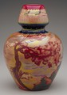

|  | Zsolnay Ceramic Factory Pécs, Hungary Vase About 1906 Porcelain with luster and other glazes Designed by Sándor Hidasy Pilló or Terez Mattyasovszky 12-3/4 inches high, 9-3/4 inches in diameter Gift of the Decorative Arts Council 94.36 |
- This vase was made at the Zsolnay Ceramic Factory in Pécs,
Hungary, which gained renown in the late nineteenth and early twentieth
centuries for its vivid LUSTER
GLAZES.
- Zsolnay's special process for producing luster glazes was a rediscovery
of techniques used prior to the seventeenth century for Islamic, Spanish,
and Italian MAJOLICA.
- The images on the vase combine traditional Hungarian decoration with
more up-to-date ART
NOUVEAU plant and landscape forms.
- Like the Swedish Art Nouveau jar included in this unit, this highly
decorative vase was made to be enjoyed as an art object by those who
could afford it.

Key ideas.
Where does it come from?
What does it look like?
How was it used?
How was it made?
Discussion questions.
Additional resources.
Select another piece.